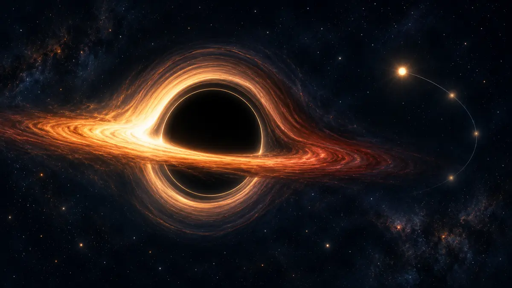

보이지 않는 블랙홀은 어떻게 찾아낼까요?
빛을 내지 않는 블랙홀을 직접 보는 대신, 뜨거운 원반과 별의 움직임, 중력파처럼 주변에 남긴 흔적으로 찾는 방법을 알아봅니다.

검다는 말은 빈 구멍이라는 뜻이 아니에요
블랙홀은 이름처럼 우주에 뚫린 구멍일까요? 실제로는 아주 작은 공간에 많은 질량이 모인 천체입니다. 그 둘레에는 사건의 지평선이라는 경계가 있고, 그 안쪽에서는 빛조차 밖으로 나오지 못합니다. 블랙홀 자체가 빛을 내거나 반사하지 않으니 망원경으로 표면을 찍듯 볼 수는 없습니다.
그렇다고 모든 것이 새까만 빈 화면으로만 남는 것은 아닙니다. 사건의 지평선 밖에서 일어나는 일은 여전히 우리에게 빛과 움직임으로 소식을 보냅니다. 천문학자는 블랙홀 자체보다 그 주변에 나타나는 흔적을 서로 맞춰 보며 존재를 확인합니다.[1] [2]
뜨거운 원반이 어둠의 가장자리를 밝혀요
근처의 가스와 먼지가 블랙홀로 곧장 떨어지지 않고 빠르게 돌면 납작한 강착원반을 이룰 수 있습니다. 원반의 물질은 안쪽으로 이동하며 뜨거워지고, 가시광선뿐 아니라 엑스선 같은 여러 파장의 빛을 냅니다. 우리가 보는 밝은 고리는 블랙홀의 빛이 아니라 아직 사건의 지평선을 넘지 않은 물질의 빛입니다.
강한 중력은 원반 뒤쪽에서 온 빛의 길도 휘게 합니다. 그래서 비스듬히 본 원반은 검은 중심의 위와 아래를 감싸는 듯 낯선 모양으로 보일 수 있어요. 사건의 지평선과 휘어진 빛이 만든 어두운 영역을 ‘블랙홀의 그림자’라고 부르지만, 그것이 블랙홀 내부를 찍은 사진이라는 뜻은 아닙니다.[1]
주변 별의 춤과 시공간의 떨림도 단서예요
밝은 원반이 없는 블랙홀은 더 찾기 어렵습니다. 이때는 보이지 않는 무거운 천체 주위를 별이 어떻게 도는지 오랫동안 측정합니다. 우리은하 중심에서도 여러 별의 궤도를 추적해 태양 질량의 약 400만 배인 초대질량 블랙홀의 존재를 확인했습니다. 멀리서 보면 같은 질량을 가진 다른 천체와 마찬가지로 중력으로 주변을 움직이게 하는 셈입니다.
블랙홀 둘이 합쳐질 때는 시공간을 퍼져 나가는 잔물결인 중력파도 생깁니다. 검출기는 그 아주 작은 흔들림을 재어 빛으로 보이지 않는 충돌을 알아냅니다. 뒤쪽 천체의 빛이 휘는 중력렌즈 효과도 외로운 블랙홀을 찾는 단서가 될 수 있습니다.[2]
무엇을 본 것인지 한 번 더 구분해보세요
블랙홀 소식을 볼 때 ‘사진을 찍었다’는 문장만 읽고 검은 천체의 표면을 직접 보았다고 생각하기 쉽습니다. 실제 관측 대상이 뜨거운 가스인지, 별의 궤도인지, 중력파인지 먼저 살펴보세요. 서로 다른 단서가 같은 설명을 가리킬수록 보이지 않는 천체에 대한 판단은 더 단단해집니다.
ORBIT 우주 뉴스에서 블랙홀 발견을 만나면 관측 장비와 파장을 함께 확인해보세요. 기억할 한 가지는 블랙홀이 보이지 않아도 주변 우주에는 흔적을 남긴다는 사실입니다. 천문학은 그 흔적을 빛, 운동, 중력파로 나누어 읽습니다.[1] [2]
이 이야기를 확인한 자료
- NASA Science · Black Hole Anatomy ↗자료 확인 2026.10.09 · 원문 새 탭
- NASA Science · Black Holes ↗자료 확인 2026.10.09 · 원문 새 탭
자료의 날짜와 적용 범위를 함께 확인해주세요. 오류 제보하기 →